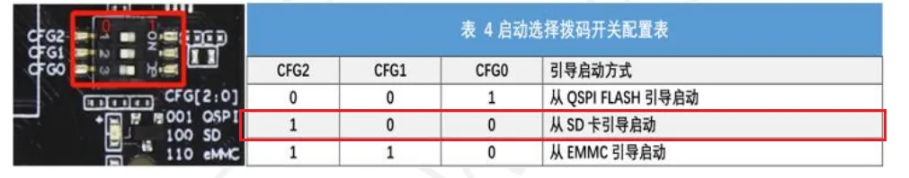

前言
第零章：环境配置与预备知识
0.1 硬件平台介绍
0.2 开发环境准备
0.2.1 运行环境
基础运行环境可以参考如下网址 使用wsl+qemu搭建开发环境
https://rcore-os.cn/arceos-tutorial-book/ch01-00.html
vscode使用
由于使用了wsl使用的linux命令行环啊，并不是大部分人喜欢的开发环境，可以使用vscode搭配remote-ssh来进行远程的开发，并且其对于wsl是有很好的兼容性的基本安装插件后就可以使用


qemu 补充
指导手册上使用的qemu版本是7.0.2有一些外设只有在最新版本上才能使用 所以可以直接从qemu官网下载最新版本 以10.0.2 版本为例子
wget https://download.qemu.org/qemu-10.0.2.tar.xz
tar xvJf qemu-10.0.2.tar.xz
cd qemu-10.0.2
make
make install
0.2.2 飞腾派上运行arceos
首先运行arceos需要依赖其他系统来提供,所以需要先烧录飞腾派系统
烧录飞腾派os
https://pan.baidu.com/s/1pStiyqohrB3SxHAFFk8R6Q (提取码：dzdv)
注释： 5-系统镜像/1-PhytiumPIOS（基于Debian）/phytiumpiosv2.1资料包/4G内存-optee版/sdcard.img.7z，解压缩。
之后使用烧录工具将系统镜像烧录到TF卡 推荐使用 balenaEtcher 下载地址 https://etcher.balena.io/ 也可以使用win32 disk image 下载地址 https://sourceforge.net/projects/win32diskimager/
注释： 常用的手机以及派上的小卡正式名叫做TF或者说microSD 大的是SD卡当然统称为sd卡也是可以的 具体区别可查看这个链接https://www.sd-nand.com/news/technology/312.html
之后注意引导方式选择从sd卡启动

注释： 如过使用的是带emmc的版本也可以直接从emmc启动但是当前版本的麒麟os启动会禁用风扇请注意
之后上电后启动即可连接串口工具即可看到打印 账号:root 密码:root
编译及运行
首先快速验证可以参考这个链接
下载Arceos
git clone https://github.com/rcore-os/arceos.git
编译Arceos
make A=examples/helloworld ARCH=aarch64 PLATFORM=aarch64-phytium-pi FEARURES="irq" SMP=4 LOG=info
之后会在example/helloword 文件夹内生成对用的可执行文件helloworld_aarch64-phytium-pi.bin
将该文件拷贝到u盘中后将u盘插入飞腾派，之后重启飞腾派并在重启过程中按enter键 进入cmd模式此时串口变为下图

执行如下指令即可在飞腾派上运行Arceos
usb start
fatload usb 0 0x90000000 helloworld_aarch64-phytium-pi.bin
go 0x90000000

0.3 前置知识引导
第一章：硬件控制类驱动
1.1 GPIO驱动开发
GPIO 介绍
GPIO 是 General Purpose Input Output（通用输入/输出） 的缩写，也就意味着这种类型的外设可以配置为多种输入/输出类型。单根GPIO的模型可以简单理解为一根导线。 导线的一端留给硬件工程师，他们可以将这一端任意的连接到他们想要的地方，然后告诉驱动工程师，他们想要 ”这根线“ 起到什么作用；导线的一端连接到cpu核心，驱动工程师通过cpu配置这个模块为指定的功能。
一般来说，GPIO可以用于获取某个的高低电平，作为cpu中断触发源等等。 下面的两个实验将分别验证gpio的 irq 和 输出 工作原理。
memory mapped io
关于这个的实现原理，本章不做过多的解释，否则篇幅将会过长。简单的来说，有了这个技术之后，外设对于cpu来说就是为一块物理内存，cpu可以像操作内存一样来操作设备。在没有这个技术之前，一些古老的设备，像intel的16位cpu，必须使用in/out一些特殊的端口来访问外设。
qemu平台关机实验
对于一些简单的设备，qemu能够很好的进行模拟。因此，对于部分没有开发板而想尝试进行驱动开发学习的同学，我们提供了基于qemu的部分实验。
实验原理
-
gpio 模块介绍
本次实验使用的gpio模块为pl061, 它是arm提供的一个集成化的gpio模块，具有8个引脚，具备常见的gpio功能, qemu也能对这个设备进行模拟（可以使用
qemu-system-aarch64 --device help来查看qemu支持的设备）。 -
pl061 相关寄存器介绍（注意：不同的外设有不同的寄存器，对于驱动工程师来说，阅读外设datasheet是必不可少的技能。所以建议暂时先跳过本节，阅读后再来验证自己的想法）
-
GPIOIS 和 GPIOIEV
这两个寄存器的宽度都为为8bit，对应8个引脚。这两个寄存器共同决定了某个引脚的中断触发方法。他们按如下的方式决定中断类型。
GPIOIS_i GPIOEV_i 引脚i中断方式 0 0 下降沿触发 0 1 上升沿触发 1 0 低电平触发 1 1 高电平触发
-
-
GPIOIE
全称是 PrimeCell GPIO interrupt enable register，翻译过来就是中断使能寄存器。宽度为8bit，对应8个引脚。每一个bit用来配置对应引脚的是否使能中断，1是使能，0是不使能。
实验过程
-
在arceos代码仓库下，使用example为helloworld，先尝试运行得到以下结果。
运行结果
arceos git:(main)✗ make A=examples/helloworld PLATFORM=aarch64-qemu-virt ARCH=aarch64 LOG=debug FEATURES="driver-ramdisk,irq" run ACCEL=n GRAPHIC=n... # skip part build log axconfig-gen configs/defconfig.toml configs/platforms/aarch64-qemu-virt.toml -w smp=1 -w arch=aarch64 -w platform=aarch64-qemu-virt -o "/Users/jp/code/arceos/.axconfig.toml" -c "/Users/jp/code/arceos/.axconfig.toml" Building App: helloworld, Arch: aarch64, Platform: aarch64-qemu-virt, App type: rust cargo -C examples/helloworld build -Z unstable-options --target aarch64-unknown-none-softfloat --target-dir /Users/jp/code/arceos/target --release --features "axstd/log-level-debug axstd/driver-ramdisk axstd/irq" Finished `release` profile [optimized] target(s) in 0.08s rust-objcopy --binary-architecture=aarch64 examples/helloworld/helloworld_aarch64-qemu-virt.elf --strip-all -O binary examples/helloworld/helloworld_aarch64-qemu-virt.bin Running on qemu... qemu-system-aarch64 -m 128M -smp 1 -cpu cortex-a72 -machine virt -kernel examples/helloworld/helloworld_aarch64-qemu-virt.bin -nographic d8888 .d88888b. .d8888b. d88888 d88P" "Y88b d88P Y88b d88P888 888 888 Y88b. d88P 888 888d888 .d8888b .d88b. 888 888 "Y888b. d88P 888 888P" d88P" d8P Y8b 888 888 "Y88b. d88P 888 888 888 88888888 888 888 "888 d8888888888 888 Y88b. Y8b. Y88b. .d88P Y88b d88P d88P 888 888 "Y8888P "Y8888 "Y88888P" "Y8888P" arch = aarch64 platform = aarch64-qemu-virt target = aarch64-unknown-none-softfloat build_mode = release log_level = debug smp = 1 [ 0.001902 0 axruntime:130] Logging is enabled. [ 0.002488 0 axruntime:131] Primary CPU 0 started, dtb = 0x44000000. [ 0.002738 0 axruntime:133] Found physcial memory regions: [ 0.002968 0 axruntime:135] [PA:0x40200000, PA:0x40206000) .text (READ | EXECUTE | RESERVED) [ 0.003304 0 axruntime:135] [PA:0x40206000, PA:0x40209000) .rodata (READ | RESERVED) [ 0.003502 0 axruntime:135] [PA:0x40209000, PA:0x4020d000) .data .tdata .tbss .percpu (READ | WRITE | RESERVED) [ 0.003714 0 axruntime:135] [PA:0x4020d000, PA:0x4024d000) boot stack (READ | WRITE | RESERVED) [ 0.003892 0 axruntime:135] [PA:0x4024d000, PA:0x40250000) .bss (READ | WRITE | RESERVED) [ 0.004080 0 axruntime:135] [PA:0x40250000, PA:0x48000000) free memory (READ | WRITE | FREE) [ 0.004290 0 axruntime:135] [PA:0x9000000, PA:0x9001000) mmio (READ | WRITE | DEVICE | RESERVED) [ 0.004482 0 axruntime:135] [PA:0x9100000, PA:0x9101000) mmio (READ | WRITE | DEVICE | RESERVED) [ 0.004662 0 axruntime:135] [PA:0x8000000, PA:0x8020000) mmio (READ | WRITE | DEVICE | RESERVED) [ 0.004806 0 axruntime:135] [PA:0xa000000, PA:0xa004000) mmio (READ | WRITE | DEVICE | RESERVED) [ 0.004948 0 axruntime:135] [PA:0x10000000, PA:0x3eff0000) mmio (READ | WRITE | DEVICE | RESERVED) [ 0.005098 0 axruntime:135] [PA:0x4010000000, PA:0x4020000000) mmio (READ | WRITE | DEVICE | RESERVED) [ 0.005284 0 axruntime:150] Initialize platform devices... [ 0.005420 0 axhal::platform::aarch64_common::gic:51] Initialize GICv2... [ 0.006258 0 axruntime:176] Initialize interrupt handlers... [ 0.006466 0 axhal::irq:32] irq=30 enabled [ 0.006830 0 axruntime:188] Primary CPU 0 init OK. Hello, world! [ 0.007086 0 axruntime:201] main task exited: exit_code=0 [ 0.007248 0 axhal::platform::aarch64_common::psci:98] Shutting down... -
由于目前arceos是unikernel模式，特权级为el1，所以可以直接在 main.c 中操作设备地址（需要注意的是，这不是一种正确的做法。但对于初学者，为了不在一开始就去研究arecos的复杂代码框架，可以短暂的把实现代码写在这儿。），将pl061模块的三号引脚配置为irq模式。
#![allow(unused)] fn main() { // examples/helloworld/main.c ... /// 0x9030000 是 qemu模拟的aarch64-qemu-virt机器的 pl061模块的基地址(物理地址)。 /// irq number 39 从 aarch64-qemu-virt机器的设备树中找到，7 + 外部中断base(32) = 39 unsafe fn set_gpio_irq_enable() { // PHYS_VIRT_OFFSET 是 arceos 初始化时，将物理内存映射时进行的偏移。 let base_addr = (0x9030000 + PHYS_VIRT_OFFSET) as *mut u8; // pl061的3号引脚 let pin = 3; // 将interrupt设置为边缘触发 let gpio_is = base_addr.add(0x404); *gpio_is = *gpio_is & !(1 << pin); // 设置触发事件 let gpio_iev = base_addr.add(0x40c); *gpio_iev = *gpio_iev & !(1 << pin); // 设置中断使能 let gpio_ie = base_addr.add(0x410); *gpio_ie = 0; *gpio_ie = *gpio_ie | (1 << pin); fn shut_down() { println!("shutdown function called"); unsafe { let base_addr = (0x9030000 + PHYS_VIRT_OFFSET) as *mut u8; let pin = 3; // clear interrupt let gpio_ic = base_addr.add(0x41c); *gpio_ic = (1 << pin); // 关机命令 core::arch::asm!( "mov w0, #0x18; hlt #0xf000" ) } }; register_handler(39, shut_down); println!("set irq done"); } } -
并将中断号注册到 GIC(generic interrupt controller)中，中断号是39。
#![allow(unused)] fn main() { // examples/helloworld/main.c ... /// 0x9030000 是 qemu模拟的aarch64-qemu-virt机器的 pl061模块的基地址(物理地址)。 /// irq number 39 从 aarch64-qemu-virt机器的设备树中找到，7 + 外部中断base(32) = 39 unsafe fn set_gpio_irq_enable() { // PHYS_VIRT_OFFSET 是 arceos 初始化时，将物理内存映射时进行的偏移。 let base_addr = (0x9030000 + PHYS_VIRT_OFFSET) as *mut u8; // pl061的3号引脚 let pin = 3; // 将interrupt设置为边缘触发 let gpio_is = base_addr.add(0x404); *gpio_is = *gpio_is & !(1 << pin); // 设置触发事件 let gpio_iev = base_addr.add(0x40c); *gpio_iev = *gpio_iev & !(1 << pin); // 设置中断使能 let gpio_ie = base_addr.add(0x410); *gpio_ie = 0; *gpio_ie = *gpio_ie | (1 << pin); fn shut_down() { println!("shutdown function called"); unsafe { let base_addr = (0x9030000 + PHYS_VIRT_OFFSET) as *mut u8; let pin = 3; // clear interrupt let gpio_ic = base_addr.add(0x41c); *gpio_ic = (1 << pin); // 关机命令，可以用别的函数替代 core::arch::asm!( "mov w0, #0x18; hlt #0xf000" ) } }; // register handler 会同时将注册和在gic中使能中断完成。 register_handler(39, shut_down); println!("set irq done"); } } -
在main中死循环，等待gpio触发中断。
#[cfg_attr(feature = "axstd", unsafe(no_mangle))] fn main() { println!("Hello, world!"); unsafe { set_gpio_irq_enable(); } println!("loop started!"); loop { sleep(time::Duration::from_millis(10)); } } -
重新执行第一步命令，若无报错，输入
ctrl + a + c进入qemu的console模式，输入system_powerdown时，qemu会模拟一次中断。... [ 0.005842 0 axhal::platform::aarch64_common::gic:51] Initialize GICv2... [ 0.006358 0 axruntime:176] Initialize interrupt handlers... [ 0.006554 0 axhal::irq:32] irq=30 enabled [ 0.007232 0 axruntime:188] Primary CPU 0 init OK. Hello, world! GPIORIS=0x0 [ 0.007688 0 axhal::irq:32] irq=39 enabled set irq done loop started! QEMU 9.2.0 monitor - type 'help' for more information (qemu) syst system_powerdown system_reset system_wakeup (qemu) system_powerdown -
GIC 会将中断分发给 arm 某个核心（由于我们是单核，不存在分发）, cpu对我们注册的关机函数进行回调。
... (qemu) system_powerdown (qemu) shutdown function called [ 50.194414 0 axruntime::lang_items:5] panicked at /Users/jp/.cargo/registry/src/mirrors.ustc.edu.cn-38d0e5eb5da2abae/axcpu-0.1.0/src/aarch64/trap.rs:112:13: Unhandled synchronous exception @ 0xffff0000402010b0: ESR=0x2000000 (EC 0b000000, ISS 0x0) [ 50.195002 0 axhal::platform::aarch64_common::psci:98] Shutting down...
优化代码
- 目前驱动代码位于
examples/helloworld/main.c中，这不是一种正确的做法。参考modules/axhal/src/platform/aarch64_common/pl011.rs的实现，在同级目录下实现 pl061.rs。 rust 提供了如tock_registers这样的可以用来定义寄存器的crate，用起来！ - 关机函数实际上是触发了一个异常而导致的关机，当把上一步完成后，换成
axhal::misc::terminate来优雅的关机！